Destination Content · Photography & Video
A photographer and a plus one, fully hosted for the trip, in exchange for a library of photo and video content that looks like a place actually lived in, not one that was staged.
The approach
Most destination content is a view. A beautiful one, and one a traveler has already scrolled past a hundred times. What makes someone book is the moment they can picture themselves in: a grin mid-ride, a reindeer leaning in at the fence to say hello, a river you want to stand beside.
My background is portrait photography, so I'm trained to find the unrehearsed moment rather than manufacture it. I travel as a guest, take every experience the way a visitor would, and photograph what actually happens. Muddy trails, wet boardwalks, a porcupine who wants a closer look.
Every moment found, never staged. That's the content people believe, and the content that gets saved, shared and booked.
The trip, covered end to end, for two travelers.
A content library fully licensed to you.
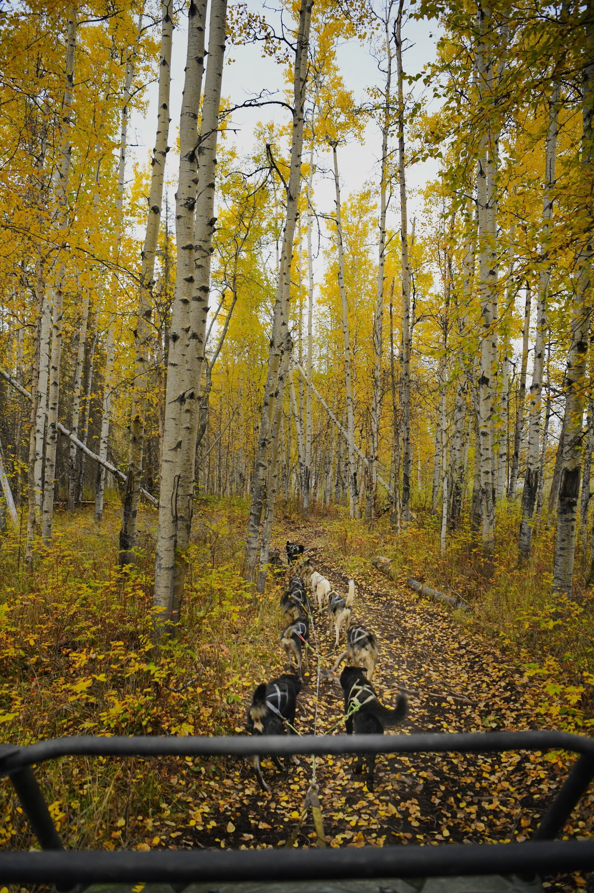
A second traveler changes the content. There's someone to point at the map with, laugh on the ride with, and react to the thing you came to see. It's the difference between a photo of an experience and a photo of someone having one.
It also lets me work the way a real visitor does. One of us can be in the moment while the other captures it, and the two-person pace shows what a trip for two feels like, which is how most people travel.
You host two, and you get content with a real traveler in the frame, not a stock model.
Reindeer farm, dog sledding, wildlife and trails. Hover each image to see how I'd caption it for your brand.
"The best seat on the trail is the one at the back, with fall color all the way down."
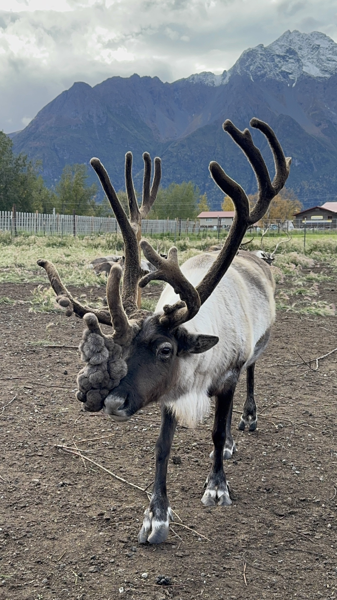
"Velvet season. He came over to say hello before we'd even opened the gate."
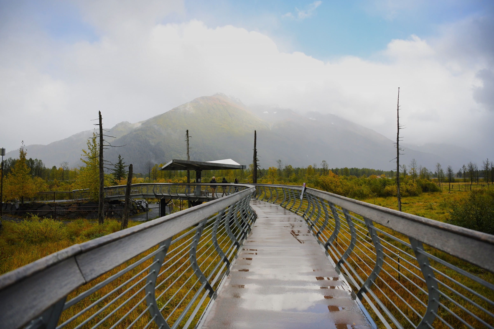
"Rain on the boardwalk, mountain at the end of it. Bring a jacket, skip the umbrella."
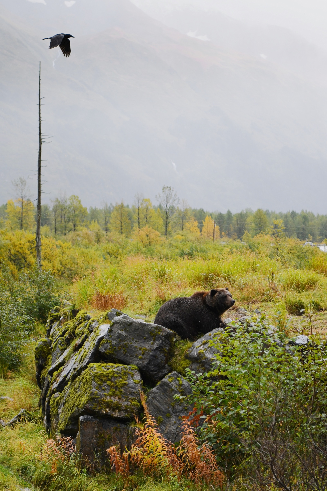
"Fog, a raven overhead, and a bear who clearly owns the place."
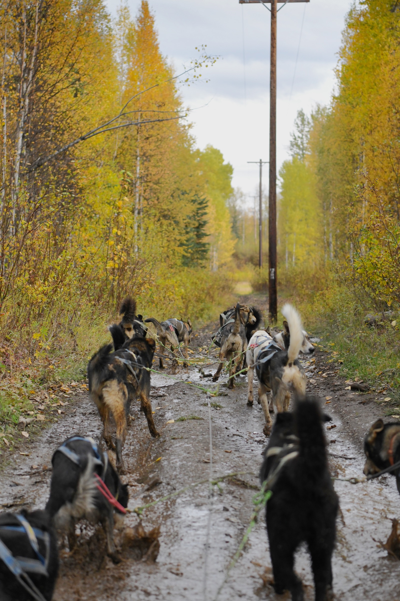
"Muddy, loud and exactly as good as it sounds."
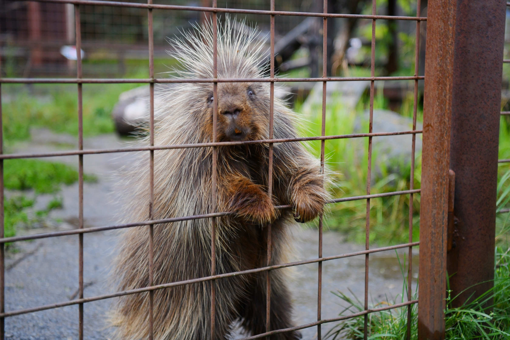
"Somebody wanted a closer look at us, too."
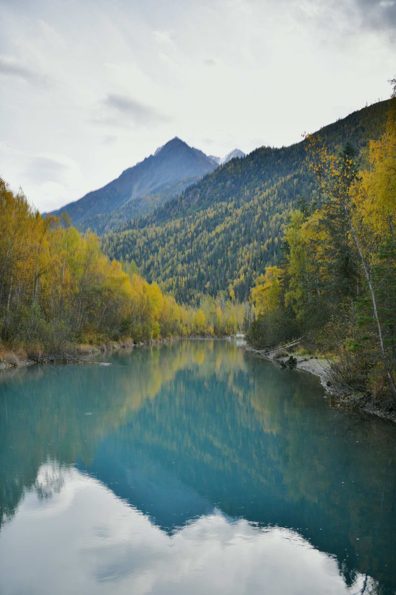
"Glacier water, just beyond the stay."
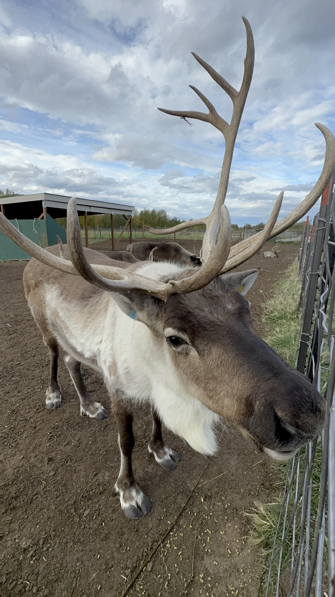
"A reindeer leaning in at the fence. This is the moment people book for."
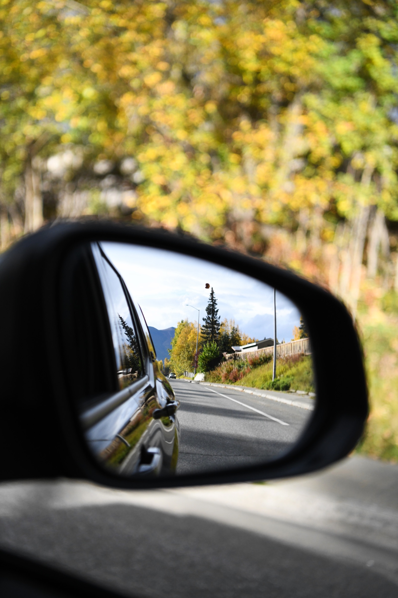
"Objects in mirror are closer than they appear. So is the mountain."
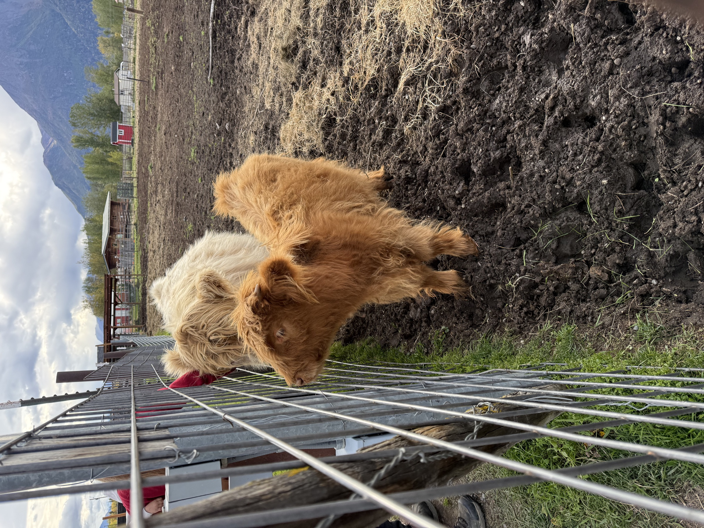
"The welcome committee has opinions about the snacks."
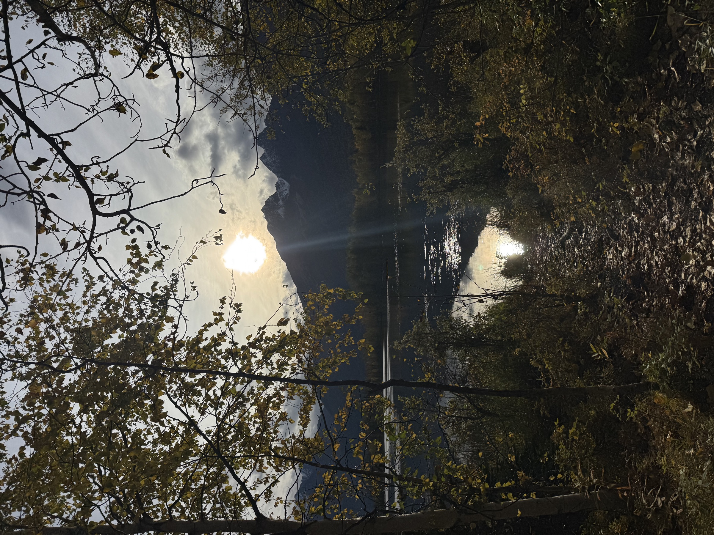
"The trail ends at the water, and the light is doing the rest."
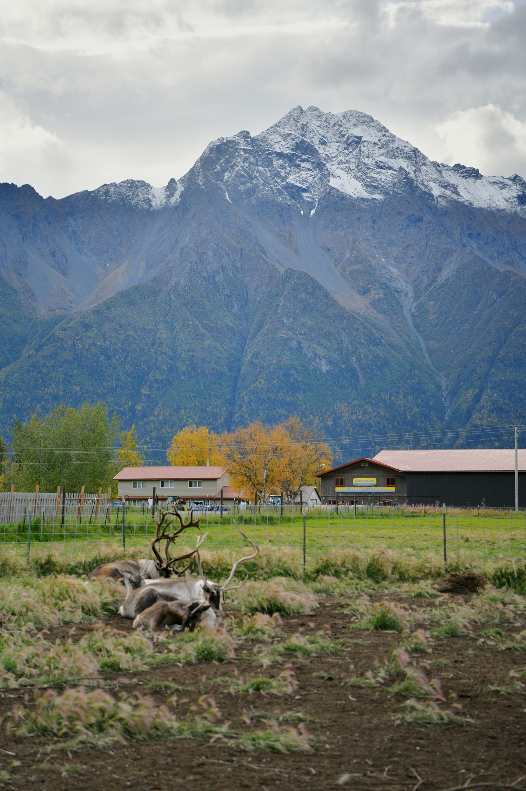
"A quiet afternoon at the farm, with a very large mountain for a backdrop."
My training is in portrait photography, which means my eye is trained to find the moment, not manufacture it. I've spent years learning how to make a subject look the way they actually feel at their best. I bring that same instinct to places, from a sled dog team running through the aspens to a reindeer leaning in at the fence.
I shoot with DSLR and mobile, so you get high-resolution hero images and native-feeling social content from the same trip. I edit in Darkroom and deliver consistent, warm, natural-light images that make people feel something about the place.
The partnership model is simple: I experience your destination as a guest, document it as a photographer, and deliver a library of content that would cost thousands to commission commercially. You get the content, and I get the experience.
Let's talk
Book a short call. We'll talk through your destination, what you'd like captured, and whether a hosted trip makes sense for both of us.
Book a CallNo commitment. Just a conversation.